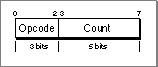
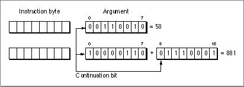
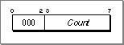
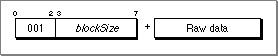
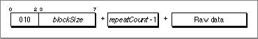
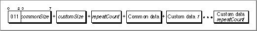
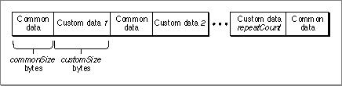
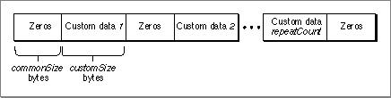

Legacy Document
Important: The information in this document is obsolete and should not be used for new development.
Important: The information in this document is obsolete and should not be used for new development.


Section Contents
The contents of a PEF section varies depending on the section type. For code and unpacked data sections, the section contains the executable code or initialized data as they would appear when loaded into memory. For some other sections, the raw section data must be manipulated by the Code Fragment Manager before loading. For example, a pattern-initialized data section does not contain simple data, but rather it contains a pattern specification that tells the loader how to initialize the section.Section data within a container must be at least 16-byte aligned if the section type is instantiated and directly usable (code or data, for example, but not pattern-initialized). Noninstantiated sections should be at least 4-byte aligned. Note that gaps may appear between sections due to alignment restrictions; you cannot be sure that adding the offset of a section to its length will locate the beginning of the next section.
Pattern-Initialized Data
Because the data stored in a PEF container acts only as a template for the instantiated version of the data section at runtime, it is preferable to compact the stored data section. Pattern-initialized data (pidata) allows you to replace repetitious patterns of data (for example, in transition vector arrays and C++ VTables) with small instructions that generate the same result. These instructions save space (resulting in a data section about one third the size of a similar uncompressed one) and can be executed quickly at preparation time.
To execute the pattern-initialization instructions, a data location counter must be set to the first byte of the data section in memory and an instruction location counter must be set to the first byte of the pattern-initialized data. Each opcode instruction (and its associated arguments) is executed in turn until the end of the pattern-initialized data section is reached. The data location counter is incremented each time a data byte is written.
- Note
- The choice of data generation patterns reflects the code generation model used to build CFM-based runtime fragments.

Figure 8-2 shows the general format of a pattern-initialization instruction.
Figure 8-2 A pattern-initialization instruction

Each instruction, depending on its definition, takes one or more arguments. The first is stored in the 5 bits of the count field while any additional arguments are stored in bytes that immediately follow the instruction byte. Each instruction may also require raw data used in the initialization process; this raw data appears after the argument bytes.
The instruction byte can hold count values up to 31. If you need to specify a count value larger than 31, you should place
0in the count field. This indicates that the first argument following the instruction byte is the count value.Argument values are stored in big-endian fashion, with the most significant bits first. Each byte holds 7 bits of the argument value. The high-order bit is set for every byte except the last (that is, an unset high-order bit indicates the last byte in the argument). For example, Figure 8-3 shows how the values 50 and 881 would be stored.
Figure 8-3 Argument storage in pattern-initialized data

The argument value is determined by shifting the current value up 7 bits and adding in the low-order 7 bits of the next byte, doing so until an unset high-order bit is encountered.
You can encode up to a 32-bit value using this format. In the case of a 32-bit value, the fifth byte must have 0 in its high-order bit, and only the least-significant 32 bits of the 35-bit accumulation are used.
- Note
- The advantage of this format is that while a 32-bit value is stored in 5 bytes, smaller values can be stored in correspondingly fewer bytes.
Pattern-Initialization Opcodes
The sections that follow describe the currently defined pattern-initialization instructions. Opcodes 101, 110, and 111 are reserved for future use.Zero (Opcode 000)
This instruction initializes Count bytes to
0beginning at the current data location.blockCopy (Opcode 001)
This instruction initializes the next blockSize bytes from the current data location to the values in the following raw data bytes.
repeatedBlock (Opcode 010)
This instruction repeats the blockSize number of data bytes repeatCount times, beginning at the current data location.
- IMPORTANT
- The repeat count value stored in the instruction is one smaller than the actual value (repeatCount -1).

interleaveRepeatBlockWithBlockCopy (Opcode 011)
This instruction requires three parameters and commonSize + (customSize * repeatCount ) bytes of raw data. The first commonSize bytes of raw data make up the common (repeating) pattern and the next customSize bytes make up the first custom (nonrepeating) section. There are repeatCount number of custom sections. The instruction places the common pattern followed by the first custom section, then the common pattern, then the second custom section, and so on. After performing this procedure repeatCount times, a final common data pattern is added at the end. Figure 8-4 shows the data section after initialization.
Figure 8-4 Data section after executing
interleaveRepeatBlockWithBlockCopy
interleaveRepeatBlockWithZero (Opcode 100)

This instruction is similar to the
interleaveRepeatBlockWithBlockCopyinstruction except the common pattern is commonSize bytes of zero instead of raw data. Figure 8-5 shows the data section after initialization.Figure 8-5 Data section after executing
interleaveRepeatBlockWithZero